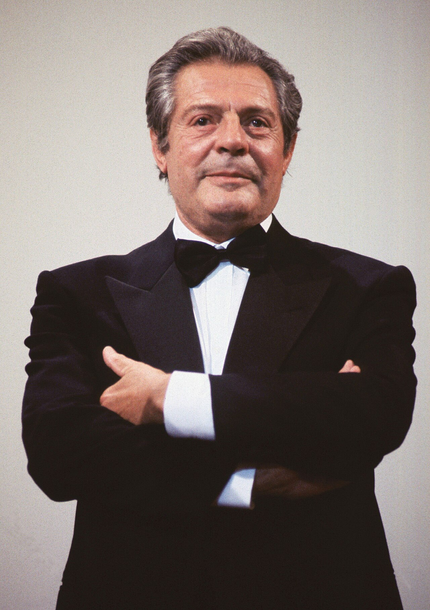
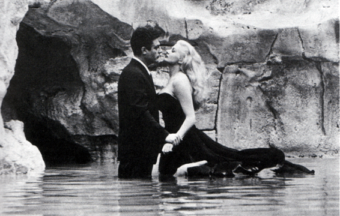
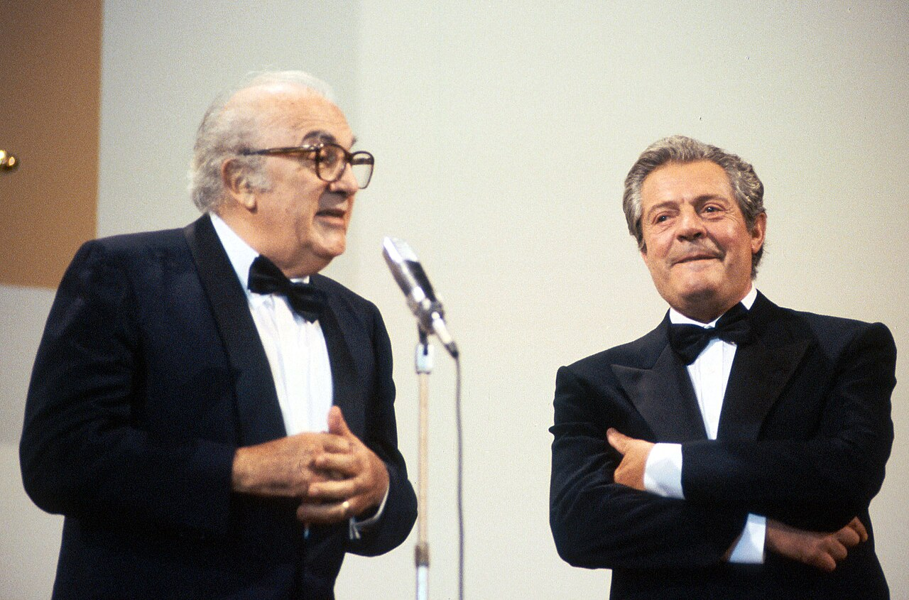
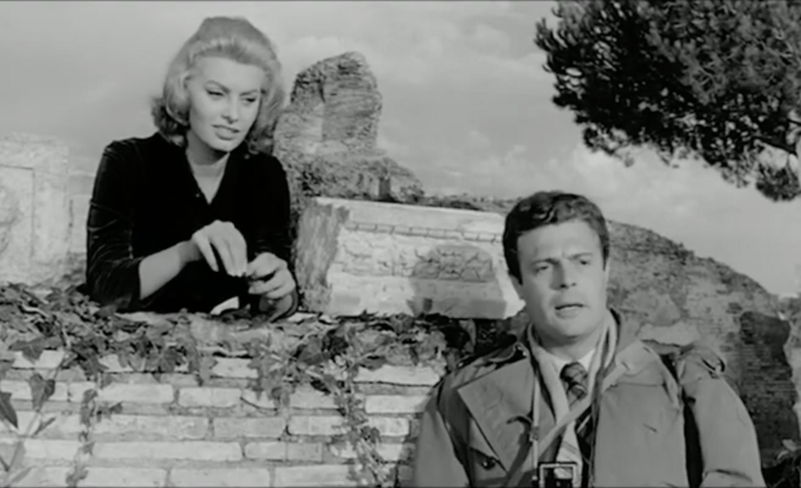
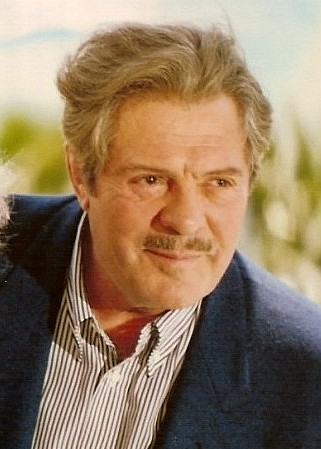

Marcello Mastroianni Biography: Age, Movies, Oscar, Sophia Loren and Family
He is the face of Italian cinema — the leading man of La Dolce Vita and 8½, the actor who stood waist-deep in the Trevi Fountain with Anita Ekberg and became a symbol of modern Europe. Marcello Mastroianni made 147 films in a career of almost sixty years, and he did it almost entirely in Italian, shunning Hollywood while becoming one of the most famous actors in the world. He was the first actor ever nominated for an Academy Award for a performance in a language other than English, and one of only three actors in history to win the Cannes Best Actor award twice. He is the fourth Italian celebrity on Stars of Europe, and the second Italian man, after Monica Bellucci, Sophia Loren and Roberto Benigni — and his story is directly linked to Loren’s: she was the first performer ever to win an acting Oscar for a non-English-language performance, and he was the first actor ever to be nominated for one. Together they made eleven films.

Key takeaways
- Born 26 September 1924 in Fontana Liri, Lazio; died 19 December 1996 in Paris, aged 72. He made 147 films between 1939 and 1996.
- He was the first actor ever nominated for an Academy Award for a non-English-language performance, and was nominated for Best Actor three times — for Divorce Italian Style (1961), A Special Day (1977) and Dark Eyes (1987).
- He won the Cannes Best Actor award twice (1970 and 1987) — one of only three actors in history to do so — plus two BAFTAs, two Golden Globes and two Volpi Cups.
- His two most famous roles were both for Federico Fellini: the journalist Marcello Rubini in La Dolce Vita (1960), famous for the Trevi Fountain scene, and the blocked film director Guido Anselmi in 8½ (1963).
- He co-starred with Sophia Loren in eleven films between 1954 and 1994 — one of the great screen partnerships in cinema history.
- When he died, the Trevi Fountain in Rome was symbolically switched off and draped in black.
Who Is Marcello Mastroianni?
| Full name | Marcello Vincenzo Domenico Mastroianni |
|---|---|
| Date of birth | 26 September 1924 |
| Date of death | 19 December 1996 (aged 72) |
| Birthplace | Fontana Liri, Lazio, Italy |
| Nationality | Italian |
| Profession | Actor |
| Years active | 1939–1996 |
| Education | Sapienza University of Rome |
| Known for | La Dolce Vita, 8½, Divorce Italian Style, A Special Day, Marriage Italian Style |
| Spouse | Flora Carabella (married 1950; separated 1964) |
| Partners | Faye Dunaway, Catherine Deneuve, Anna Maria Tatò |
| Children | Barbara Mastroianni, Chiara Mastroianni |
| Net worth | Not stated — no reliable estimate found |
Marcello Mastroianni is generally regarded as one of Italy’s greatest male actors — the face of Italian cinema in the 1960s, and the pre-eminent leading man of his generation. In a career of 147 films, he played leading roles for almost every great Italian director of his time, above all Federico Fellini, and he did it almost entirely in Italian: despite international fame, he largely shunned Hollywood and stayed a quintessentially Italian actor to the end. His screen persona was famously easy and natural — a man of casual affability, as Britannica puts it, who could play comedy and tragedy with the same quiet charm, and who made it look effortless.
Two records make his place in film history unique. He was the first actor ever to be nominated for an Academy Award for a performance in a language other than English, and he was nominated three times. And he is one of only three actors in history — with Jack Lemmon and Dean Stockwell — to win the Cannes Film Festival Award for Best Actor twice. His most famous images are known around the world even by people who have never seen his films: standing waist-deep in the Trevi Fountain with Anita Ekberg in La Dolce Vita, and wandering through a dream of his own unfinished film in 8½.
He is the fourth Italian celebrity on this site, and the second Italian man, after Monica Bellucci, Sophia Loren and Roberto Benigni — and his story is directly linked to Loren’s: she was the first performer ever to win an acting Oscar for a non-English-language performance, and he was the first actor ever to be nominated for one. Together, they made eleven films, and their partnership is one of the most famous in cinema.
Age and Early Life — A Boy from Fontana Liri
Marcello Vincenzo Domenico Mastroianni was born on 26 September 1924 in Fontana Liri, a small village in the Apennine hills of Lazio, in the province of Frosinone. His parents, Ida Irolle and Ottone Mastroianni, were both from the nearby town of Arpino; his father ran a carpentry shop. He grew up in Turin and Rome, and he was the nephew of the sculptor Umberto Mastroianni. His younger brother Ruggero became a film editor, and worked on some of Marcello’s own films.
His youth was marked by the Second World War. After Italy split into Axis and Allied halves, he was interned in a loosely guarded German prison camp, from which he escaped and hid in Venice. After the war he enrolled at the Sapienza University of Rome, where he began acting in amateur theatricals sponsored by the university, and in 1948 he joined one of Italy’s leading theatre companies. He was already appearing in films as a teenager, but it was the stage that taught him his craft — and it was the stage, friends said, that gave him the relaxed, natural style that later made him so convincing on screen.
First Films — From Extra to Leading Man
Mastroianni made his screen debut as an uncredited extra in Marionette in 1939, when he was fourteen, and he appeared in small parts through the 1940s. His first substantial role came in Atto d’accusa (The Accusation) in 1951. Through the early 1950s he worked steadily in Italian cinema, and by the middle of the decade he was a well-known actor in Italy, playing in films such as Days of Love (1954) with Marina Vlady and Too Bad She’s Bad (1954), the first of his many films with Sophia Loren.
His critical and commercial breakthrough came with the caper comedy Big Deal on Madonna Street (I soliti ignoti, 1958), about a gang of small-time crooks who bungle a burglary. The film was a hit, and it showed what Mastroianni could do: he was funny without trying to be funny, a handsome leading man who could also play an ordinary, slightly lost man. The year before, Luchino Visconti had cast him in White Nights (1957), a romantic drama based on a Dostoevsky story, and it was that performance that brought him to the attention of the director who would change his life: Federico Fellini.
La Dolce Vita and 8½ — The Fellini Years
Fellini cast Mastroianni as Marcello Rubini, a disillusioned tabloid journalist, in La Dolce Vita (1960) — “the sweet life”. The film follows Rubini through seven days and nights in Rome’s decadent high society, chasing stories, women and meaning, and finding none of them. Its most famous scene is also one of the most famous scenes in all of cinema: Rubini follows the Swedish actress Sylvia, played by Anita Ekberg, into the Trevi Fountain at night, and the two stand waist-deep in the water as she calls him to come closer. The film won the Palme d’Or at Cannes in 1960 and made Mastroianni an international celebrity overnight.


Three years later Fellini gave him an even more personal role: Guido Anselmi, a creatively blocked film director, in 8½ (1963). The film is a dream about making a film — Guido cannot finish his science-fiction epic, and escapes into memories, fantasies and affairs while producers, his wife and his mistress all wait for him to decide something. Mastroianni’s performance, weary, charming and lost, is the centre of the film, and 8½ is now widely regarded as one of the greatest films ever made. He worked with Fellini again in later years, in City of Women (1980) and Ginger and Fred (1986), and the two men’s names remain linked in film history: Fellini’s leading man, and Mastroianni’s great director.


Between the two Fellini masterpieces he also made La Notte (1961) with Jeanne Moreau, directed by Michelangelo Antonioni, playing a novelist whose marriage has gone cold — a performance of remarkable stillness from an actor famous for his warmth. It was the first sign of what his career would become: he could play the charming leading man, the comic rogue and the quiet, unhappy husband, all with the same face.
Sophia Loren — Eleven Films Together
No screen partnership in Italian cinema lasted longer, or meant more, than Marcello Mastroianni and Sophia Loren. They co-starred in eleven films between 1954 and 1994, and their chemistry — hers fiery and earthy, his easy and amused — became a national institution. It began with Too Bad She’s Bad (1954) and Lucky to Be a Woman (1956), light comedies in which they played young lovers, and it ran through the great international hits of the 1960s: Yesterday, Today and Tomorrow (1963), for which Loren won her second Oscar nomination, and Marriage Italian Style (1964), in which Mastroianni plays Domenico Soriano, a rich businessman who has kept Loren’s Filumena as his mistress for twenty years and finally marries her.

_Loren_e_Mastroianni.png){kind=link}
They kept working together for forty years: Sunflower (1970), a war drama about a wife searching for her missing husband in Russia; The Priest’s Wife (1971); A Special Day (1977), the quiet, devastating film that brought Mastroianni his second Oscar nomination; and finally Robert Altman’s Prêt-à-Porter (1994), their last film together. Off screen they were close friends for life, and Loren has often said that Mastroianni was her favourite co-star. Their partnership is one of the reasons the Italian section of this site keeps growing: read Loren’s own biography here.
The Oscar Nominations — A First in Film History
Mastroianni’s place in Oscar history is secure, and it rests on a first that nobody can take from him: he was the first actor ever to receive an Academy Award nomination for a performance in a language other than English. The nomination came for Divorce Italian Style (Divorzio all’italiana, 1961), Pietro Germi’s black comedy in which he plays Baron Ferdinando Cefalù, a Sicilian nobleman who wants to murder his wife so that he can marry his young cousin — and who, under the Italian law of the time, could get away with it as a crime of honour. The performance is one of the great comic turns in Italian cinema, and it made him the first non-English-language Best Actor nominee in the Academy’s history.
He was nominated twice more, and never won. The second nomination was for A Special Day (Una giornata particolare, 1977), Ettore Scola’s film about a single day — 6 May 1938, the day Hitler visited Rome — in which Mastroianni plays Gabriele, a homosexual radio announcer about to be sent into internal exile, who spends the day with his neighbour Antonietta, played by Sophia Loren. It is a quiet, humane film, and his performance in it is one of his finest. The third nomination was for Dark Eyes (Oci ciornie, 1987), Nikita Mikhalkov’s Chekhov adaptation, in which he plays Romano, an ageing Italian architect who falls in love with a young Russian woman.
He never won the Oscar, but Cannes honoured him twice: he won the Best Actor award at the Cannes Film Festival in 1970 for The Pizza Triangle and again in 1987 for Dark Eyes. Only two other actors in history — Jack Lemmon and Dean Stockwell — have won the Cannes Best Actor prize twice. His other honours included two BAFTA Awards, two Golden Globe Awards and two Volpi Cups for Best Actor at Venice, where in 1990 Federico Fellini himself presented him with the Golden Lion for Lifetime Achievement.
Later Films — From Divorce Italian Style to Dark Eyes
Mastroianni’s filmography is so long that any list of highlights leaves out fine films. Beyond the Fellini films and the Loren comedies, his most important work includes Casanova 70 (1965), Mario Monicelli’s comedy about a man who can only make love in dangerous situations; The 10th Victim (1965), a science-fiction satire with Ursula Andress; The Stranger (1967), Luchino Visconti’s adaptation of Albert Camus’s novel, in which he plays the detached Meursault; Diamonds for Breakfast (1968) with Rita Tushingham; The Pizza Triangle (1970) with Monica Vitti; La Grande Bouffe (1973), Marco Ferreri’s notorious film about four men who eat themselves to death; Massacre in Rome (1973) with Richard Burton; The Sunday Woman (1975) with Jacqueline Bisset; Stay As You Are (1978) with Nastassja Kinski; Henry IV (1984); Macaroni (1985) with Jack Lemmon; Giuseppe Tornatore’s Everybody’s Fine (1990); and Used People (1992) with Shirley MacLaine.
He worked until the very end of his life. In 1996 he starred alongside his daughter Chiara in Raúl Ruiz’s Three Lives and Only One Death, and his final film, Manoel de Oliveira’s Voyage to the Beginning of the World, was released after his death in 1997. He also worked in France throughout his career, notably with Jeanne Moreau in La Notte and with Catherine Deneuve, his partner of four years, in four films in the early 1970s. He was made a Knight Grand Cross of the Order of Merit of the Italian Republic in 1994, the country’s highest civilian honour, and received the European Film Academy’s Lifetime Achievement Award in 1988.


Personal Life
Mastroianni married the actress Flora Carabella on 12 August 1950. They had one daughter together, Barbara, born in 1951, who died in 2018. The couple separated informally in 1964, but — Mastroianni was a Catholic — they never divorced, and Carabella remained his wife until his death.
His first serious relationship after the separation was with the American actress Faye Dunaway, his co-star in A Place for Lovers (1968). Dunaway wanted to marry and have children, but Mastroianni refused to divorce Carabella, and after more than two years she left him. He later told a reporter that she was the woman he loved the most, and that he was sorry to have lost her; Dunaway wrote in her autobiography that she wished to that day that it had worked out.
After Dunaway he began a relationship with the French actress Catherine Deneuve, who was nearly twenty years his junior. They lived together for four years in the 1970s and had a daughter, Chiara Mastroianni, born on 28 May 1972, who became an actress herself. During their time together the couple made four films. From 1976 until his death in 1996 he was with Anna Maria Tatò, an author and filmmaker, who was at his bedside when he died, along with both of his daughters and Deneuve. His other reported relationships included the actresses Anouk Aimée, Claudia Cardinale, Lauren Hutton and Ursula Andress.
Death — The Trevi Fountain Goes Dark
Mastroianni died of pancreatic cancer in Paris on 19 December 1996, at the age of 72. Both of his daughters, as well as Deneuve and Tatò, were at his bedside. His funeral was held at the Church of Saint-Sulpice in Saint-Germain-des-Prés in Paris on 20 December, before his remains were transferred to Rome, where a second ceremony took place at the city hall on 22 December, and he was buried in his family vault in the Verano Cemetery.
Italy mourned him as it mourns very few actors. In Rome, the Trevi Fountain — the fountain of La Dolce Vita, the scene that had made him world-famous thirty-six years earlier — was symbolically switched off and draped in black as a tribute. It was the city’s way of saying what the whole country felt: the leading man of Italian cinema was gone, and the fountain where he had stood waist-deep with Anita Ekberg would stay dark for him.
Awards — Cannes, BAFTA, Golden Globes and Venice
Mastroianni’s honours, in brief: three Academy Award nominations for Best Actor, without a win, for Divorce Italian Style (1961), A Special Day (1977) and Dark Eyes (1987); two Cannes Film Festival Awards for Best Actor, in 1970 and 1987; two BAFTA Awards; two Golden Globe Awards; two Volpi Cups for Best Actor at Venice; the Golden Lion for Lifetime Achievement at Venice in 1990, presented by Fellini; the European Film Academy Lifetime Achievement Award in 1988; a César Award in 1993; and the David di Donatello and Nastro d’Argento awards for Best Actor in Italy. He was one of only three actors ever to win the Cannes Best Actor prize twice, and the first actor ever nominated for an Oscar for a non-English-language performance.
Filmography Highlights
| Year | Title | Notes |
|---|---|---|
| 1939 | Marionette | Uncredited extra; screen debut at 14 |
| 1951 | Atto d’accusa (The Accusation) | First big role |
| 1954 | Too Bad She’s Bad | First film with Sophia Loren |
| 1956 | Lucky to Be a Woman | With Sophia Loren |
| 1957 | White Nights | Luchino Visconti |
| 1958 | Big Deal on Madonna Street | Breakthrough comedy |
| 1960 | La Dolce Vita | Federico Fellini; as Marcello Rubini |
| 1961 | La Notte | Michelangelo Antonioni; with Jeanne Moreau |
| 1961 | Divorce Italian Style | First Oscar nomination |
| 1963 | 8½ | Federico Fellini; as Guido Anselmi |
| 1963 | Yesterday, Today and Tomorrow | With Sophia Loren |
| 1964 | Marriage Italian Style | With Sophia Loren |
| 1965 | Casanova 70 | Mario Monicelli |
| 1967 | The Stranger | After Albert Camus |
| 1970 | The Pizza Triangle | Cannes Best Actor; with Monica Vitti |
| 1970 | Sunflower | With Sophia Loren |
| 1973 | La Grande Bouffe | Marco Ferreri |
| 1977 | A Special Day | Second Oscar nomination; with Sophia Loren |
| 1980 | City of Women | Federico Fellini |
| 1986 | Ginger and Fred | Federico Fellini |
| 1987 | Dark Eyes | Third Oscar nomination; Cannes Best Actor |
| 1990 | Everybody’s Fine | Giuseppe Tornatore |
| 1992 | Used People | With Shirley MacLaine |
| 1994 | Prêt-à-Porter | Last film with Sophia Loren |
| 1996 | Three Lives and Only One Death | With his daughter Chiara |
| 1997 | Voyage to the Beginning of the World | Released after his death |
FAQs
How old was Marcello Mastroianni when he died?
Marcello Mastroianni was born on 26 September 1924 in Fontana Liri, Italy, and died of pancreatic cancer in Paris on 19 December 1996. He was 72 years old.
How many films did Marcello Mastroianni make?
He made 147 films between 1939 and 1996, according to Wikipedia’s filmography. Britannica counts about 120 starring roles — the difference is between all credited film appearances and leading roles.
Was Marcello Mastroianni ever nominated for an Oscar?
Yes — three times, for Best Actor, and he never won. He was nominated for Divorce Italian Style (1961), A Special Day (1977) and Dark Eyes (1987). He was the first actor ever nominated for an Oscar for a non-English-language performance.
What is the Trevi Fountain scene in La Dolce Vita?
In Federico Fellini’s La Dolce Vita (1960), Mastroianni’s character Marcello follows the actress Sylvia, played by Anita Ekberg, into the Trevi Fountain in Rome at night, and the two stand waist-deep in the water. It is one of the most famous scenes in cinema history, and when Mastroianni died in 1996 the fountain was symbolically switched off and draped in black in his honour.
How many films did Marcello Mastroianni make with Sophia Loren?
Eleven, between 1954 and 1994 — from Too Bad She’s Bad (1954) to Prêt-à-Porter (1994), including Yesterday, Today and Tomorrow (1963), Marriage Italian Style (1964) and A Special Day (1977). Read Loren’s biography here.
Who was Marcello Mastroianni’s wife?
Actress Flora Carabella. They married on 12 August 1950 and had a daughter, Barbara (1951–2018). They separated in 1964 but never divorced, and she remained his wife until his death. His best-known partners after the separation were Faye Dunaway (1968–1970), Catherine Deneuve (1970–1974), with whom he had a daughter, Chiara, and Anna Maria Tatò (1976–1996).
What was Marcello Mastroianni’s net worth?
No reliable published estimate of Marcello Mastroianni’s net worth was found, so no figure is given in this article — and he does not appear on this site’s Top 10 Richest Celebrities page. See the Top 10 Richest page for the current ranking.
Did Marcello Mastroianni win the Oscar for La Dolce Vita?
No. La Dolce Vita (1960) won the Palme d’Or at Cannes and was nominated for four Academy Awards, including Best Director for Fellini, but Mastroianni was not nominated for it. His first Oscar nomination came the next year, for Divorce Italian Style.
Sources
Facts in this article were checked against: Wikipedia — Marcello Mastroianni (born 26 September 1924 Fontana Liri, Lazio; full name Marcello Vincenzo Domenico Mastroianni; died 19 December 1996 Paris, aged 72, of pancreatic cancer; 147 films 1939–1996; two BAFTA Awards, two Cannes Best Actor awards, two Volpi Cups, two Golden Globes, three Academy Award nominations; first actor nominated for an Oscar for a non-English-language performance; Cannes Best Actor twice, 1970 for The Pizza Triangle and 1987 for Dark Eyes, one of only three actors to do so; screen debut as an uncredited extra in Marionette 1939 at 14; first big role Atto d’accusa 1951; breakthrough Big Deal on Madonna Street 1958; La Dolce Vita 1960 as Marcello Rubini, Trevi Fountain scene with Anita Ekberg; 8½ 1963 as Guido Anselmi; La Notte 1961; eleven films with Sophia Loren 1954–1994; Oscar nominations for Divorce Italian Style 1961, A Special Day 1977 and Dark Eyes 1987; parents Ida Irolle and Ottone Mastroianni, carpentry shop, both from Arpino; nephew of sculptor Umberto Mastroianni; interned in a German prison camp in the Second World War and escaped to Venice; brother Ruggero Mastroianni, film editor; married Flora Carabella 12 August 1950, daughter Barbara 1951–2018, separated 1964, never divorced; Faye Dunaway 1968–1970, A Place for Lovers; Catherine Deneuve 1970–1974, daughter Chiara born 28 May 1972, four films together; Anna Maria Tatò 1976–1996; Knight Grand Cross of the Order of Merit of the Italian Republic 1994; Trevi Fountain switched off and draped in black on his death; funeral Saint-Sulpice Paris 20 December 1996, Rome city hall 22 December, buried Verano Cemetery; final film Voyage to the Beginning of the World released posthumously 1997; Three Lives and Only One Death 1996 with daughter Chiara) and Encyclopaedia Britannica — Marcello Mastroianni (born 26 September 1924 Fontana Liri, died 19 December 1996 Paris; enrolled at the University of Rome after the Second World War, amateur theatricals, joined a leading troupe in 1948; White Nights 1957; La Dolce Vita 1960; La Notte 1960; Divorce Italian Style 1961; 8½ 1963; Yesterday, Today and Tomorrow and Marriage Italian Style 1964 with Sophia Loren; Sunflower 1969; The Priest’s Wife 1970; A Special Day 1977; about 120 starring roles). The Commons category page gives his date of birth as 28 September 1924, which disagrees with Wikipedia and Britannica; the article follows the two that agree, and the discrepancy is noted above. No net-worth figure is given because no reliable published estimate was found. All writing is original to Stars of Europe. Deliberately left out: claims from thin celebrity blogs; any single-figure net worth; and any detail about his reported relationships beyond what is stated in the personal-life paragraph, where they are named only as reported relationships. Photographs used: the 1990 Venice portrait (Gorup de Besanez, CC BY-SA 3.0); the 1960 Trevi Fountain still (public domain); the 1956 film still with Sophia Loren (public domain); the 1990 Venice photograph with Federico Fellini (Gorup de Besanez, CC BY-SA 4.0); and the 1991 portrait (CC BY-SA 3.0) — each visually checked against the person named. The 1954 public-domain portrait (Foto Dial, Radiocorriere, 12 September 1954) exists on Commons but could not be downloaded on 23 November 2026 because Wikimedia rate-limited the requests, so it is not used yet.